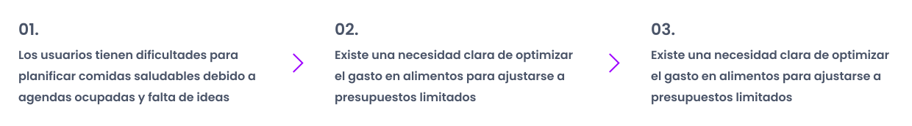
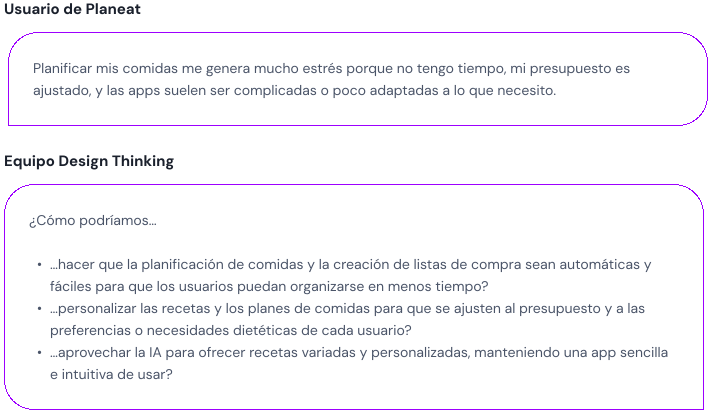

¿Cómo ayudar a las personas a planificar su alimentación diaria de manera saludable, eficiente y económica?
El reto fue diseñar una app que aproveche la Inteligencia Artificial para personalizar planes de comidas y listas de la compra, ajustándose a las necesidades de tiempo, presupuesto y preferencias alimentarias de los usuarios. El objetivo es ofrecer una app integral que simplifique la organización diaria de comidas y reduzca el estrés entorno a ella, todo con un diseño intuitivo y fácil de usar.
Rol
Diseñadora UX/UI principal
Skills
Metodología Design Thinking
Investigación de usuarios y análisis de datos
Creación de User Personas y User Journey Maps
Creación de wireframes y prototipos
Pruebas de usabilidad
Herramientas
Figma
FigJam
Whimsical
Maze
01. Descubrir, entender y empatizar
Comprendiendo el desafío y los objetivos de la investigación
Investigación de hábitos, frustraciones y prioridades de los usuarios a través de encuestas y entrevistas.
Identificación de problemas clave como falta de tiempo, presupuestos ajustados y personalización de comidas mediante el análisis de necesidades.
Análisis de apps similares para detectar oportunidades como la integración de listas de compra con precios actualizados.
Exploración de las posibilidades que brinda la Inteligencia Artificial para resolver problemas relacionados con la planificación de comidas que expresaban los usuarios.
Se realizaron ocho entrevistas a personas de 28 a 42 años para explorar sus necesidades alimentarias, enfocándose en la falta de tiempo y presupuesto, la preocupación por una alimentación saludable y el uso de tecnología. Estas conversaciones revelaron hábitos, prioridades y frustraciones clave relacionadas con la planificación de comidas, la optimización de recursos y la adaptación de recetas.

Encuestas a usuarios
Se realizaron encuestas que confirmaron la necesidad de una app diseñada para resolver problemas como la falta de tiempo y de ideas de recetas (78%), optimizar presupuestos y centralizar funciones clave. Además, la mayoría (95%) ya organiza menús semanales o utiliza listas de compra, mientras que un 65% usa apps de alimentación varias veces a la semana, valorando especialmente el acceso a recetas y planificadores de comidas (91%).
Los usuarios necesitan una app que combine la planificación de comidas, la creación de listas de compra y la personalización de recetas en un solo lugar, para ahorrar tiempo y simplificar su día a día.
La falta de tiempo e ideas limita la planificación de comidas saludables, haciendo crucial incluir sugerencias personalizadas.
Optimizar el presupuesto alimentario es prioritario, valorando funciones como comparadores de precios y limitaciones de presupuesto para planificación.
La utilización de apps de alimentación está en auge, destacando la oportunidad de integrar tecnología como la IA para mejorar la experiencia.
02. Definir el desafío
Audiencia objetivo
En esta etapa del proyecto, definí un perfil principal para Planeat: personas ocupadas con poco tiempo, interesadas en optimizar su presupuesto sin sacrificar una alimentación saludable.
Las personas con agendas ocupadas y presupuestos ajustados enfrentan dificultades para mantener una alimentación saludable y económica, lo que las lleva a optar por soluciones menos saludables o más costosas. Planeat ofrece una solución basada en IA que centraliza la planificación alimentaria mediante un calendario de recetas personalizadas y listas de compra optimizadas según el presupuesto, facilitando el ahorro de tiempo y promoviendo hábitos saludables.
03. Idear la solución
How Might We
El primer paso para idear un MVP que respondiera a los obejtivos planteados tras la fase de investigación comenzó por una exploración de cómo podríamos solventar los problemas y desafíos detectados. Para ello se plantearon los siguientes “How Might We”:

Priorización
Basándome en los hallazgos anteriores, definí un MVP centrado en la planificación automática de comidas, la personalización según presupuesto y dieta, y una interfaz sencilla que haga la experiencia del usuario más fácil y práctica.
La arquitectura de Planeat está pensada para que los usuarios encuentren todo lo que necesitan de forma rápida y sencilla. Desde la pantalla de inicio, tienen acceso directo a secciones clave como el planificador, la lista de compra y las recetas, mientras que en el perfil pueden personalizar preferencias, ajustar menús y consultar su progreso. Todo está organizado para que crear planes de comidas, gestionar listas de la compra y descubrir nuevas recetas sea fácil y rápido, asegurando que cada funcionalidad esté a solo unos clics de distancia.
El flujo del usuario incluye un onboarding inicial para personalizar la experiencia seguido de dos opciones principales: un generador de IA para automatizar la planificación o la selección manual de recetas, además de pasos para generar listas de compra optimizadas y gestionar recetas de forma intuitiva.
Enfoque MVP para resolver el planteamiento del problema
Para resolver el planteamiento del problema de Planeat, se diseñó un MVP que prioriza las siguientes áreas clave:
Personalización Inteligente con IA para adaptar comidas y compras a preferencias, restricciones dietéticas y presupuesto de forma que se optimice el tiempo y ahorro a través de planificador de comidas asistido, listas automáticas y comparadores de precios.
Navegación sencilla para facilitar el uso integral de todas las funcionalidades integradas.
04. Diseñar con propósito
Wireframes
Tras las fases anteriores, comencé a diseñar los wireframes de baja fidelidad que representan la estructura y funcionalidad principal de Planeat. Estas pantallas reflejan las prioridades del MVP: pantalla de introducción y registro para configurar y acceder a la app, planificador asistido que genera planes de comidas personalizados automáticamente, asistente de listas de compra para gestionar productos y comparar precios, recetas personalizadas con detalles de tiempo, precio y datos nutricionales y pantalla de perfil del usuario para realizar ajustes según sus necesidades.
Tras definir las pantallas clave de Planeat, creé la guía visual y el sistema de diseño. Elegí una paleta de colores basada en tonos frescos y naturales que refuerzan la conexión con la alimentación saludable. La tipografía seleccionada facilita la legibilidad en móviles, y su tamaño marca jerarquías claras para facilitar la navegación y la comprensión de contenido. Por otro lado, el diseño atómico fue clave para construir componentes reutilizables, como los botones de acción rápida que se incluyeron en elementos como las cards de productos de la compra o las cards de recetas, con detalles destacados como tiempo y coste. También se diseñó una barra de navegación fija que permitía acceder a las principales funcionalidades desde un mismo lugar siempre visible. Estas decisiones no solo garantizan una experiencia visual coherente, sino que también optimizan el desarrollo y la escalabilidad del proyecto.
El prototipo de Planeat se centró en un planificador asistido por IA. Incluye una barra de navegación fija para acceder fácilmente al planificador, recetas y listas de compra. También cubre todo el flujo de interacción, desde la selección de preferencias y presupuesto hasta la generación automática de listas de compra basadas en las recetas elegidas.
En las pruebas de usabilidad con 14 usuarios, se evaluaron 5 tareas clave, como registrar la cuenta, agregar un plan de comidas y consultar la lista de la compra. Las tareas de “agregar un plan” y “ver el supermercado más cercano” generaron mayor confusión. Se identificaron áreas de mejora en la selección de objetivos dietéticos, la pantalla de inicio, la lista de la compra y la consulta de supermercados, destacando oportunidades para optimizar la experiencia y la claridad en la app.
El mayor desafío fue integrar múltiples funcionalidades en una sola app para responder a las necesidades de los usuarios.
Las pruebas de usabilidad revelaron confusión en flujos críticos como agregar planes de comidas y gestionar listas de compra.
La claridad en la navegación y la simplicidad de los flujos son esenciales para una buena experiencia en un producto multifuncional.
Tasas altas de clics erróneos y abandono en pantallas como el onboarding y la lista de compra indican la necesidad de iterar.
Próximos pasos: simplificar flujos complejos, optimizar pantallas problemáticas, ajustar elementos visuales y validar mejoras con nuevas pruebas de usabilidad.
Let's Work Together • Let's Work Together • Let's Work Together • Let's Work Together • Let's Work Together • Let's Work Together •